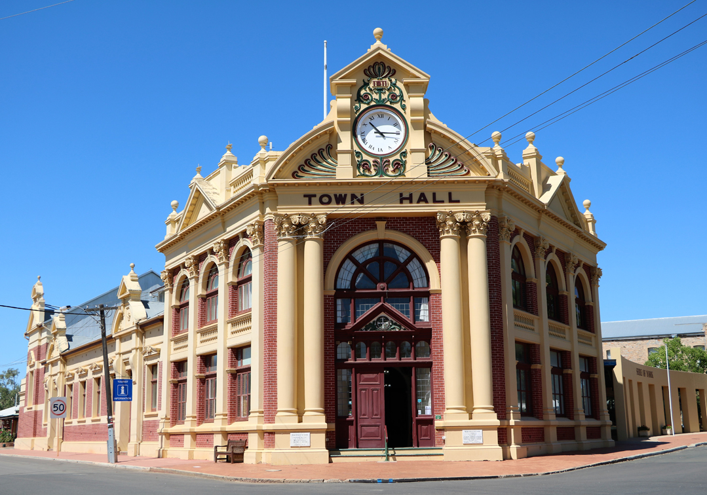

Aspect of problem to be solved: protect humans and minimize impact/size of
the smog
1) Individuals
- Check the daily air pollution forecast in the area
- Be prepared for if there is wildfire smoke
- Prioritize other modes of transportation instead of driving a personal gasoline-powered vehicle (ex. public
transit, biking, walking, etc.)

2) Local Govt.
- Adopt a climate action plan (encouraging reducing personal emission, ensuring building and parking policies
correlate with lower emission)
- Purchase zero-emission public transit vehicles (buses, garbage trucks, etc.)
- Invest in non-combustion electricity or renewable energy
3) State Govt.
- Governor Gavin should reinstate the stricter pollution standards for energy producers; he could also invest
the state with a more robust power grid that can handle more power
- The governor has already made great strives toward zero-emissions for vehicles; he should ensure that these
standards are probably mandated at and around Los Angeles since nitrides and hydrocarbons from cars are a
major
source of ozone formation
4) Federal Govt.
- Congress should pass laws that work toward zero-emission electric and transportation
- The EPA should set a stricter national standard on ozone (60 parts per billion standard) and
particulate
matter (8 micrograms per m^3 annually, and 25 micrograms per m^3 daily), which would be most efficient
at
protecting all types of people
If all these steps are followed, we can make great progress against L.A. smog!!